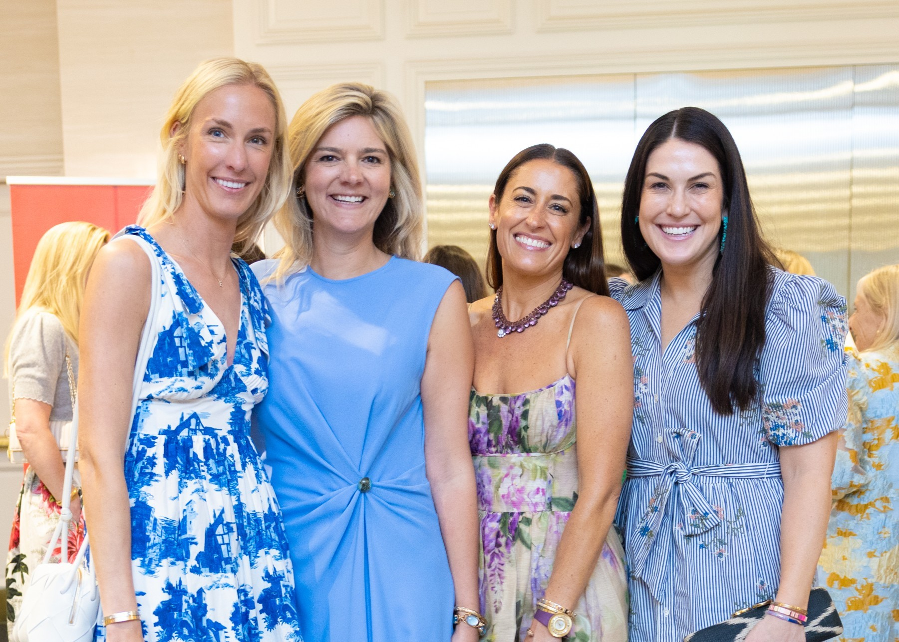
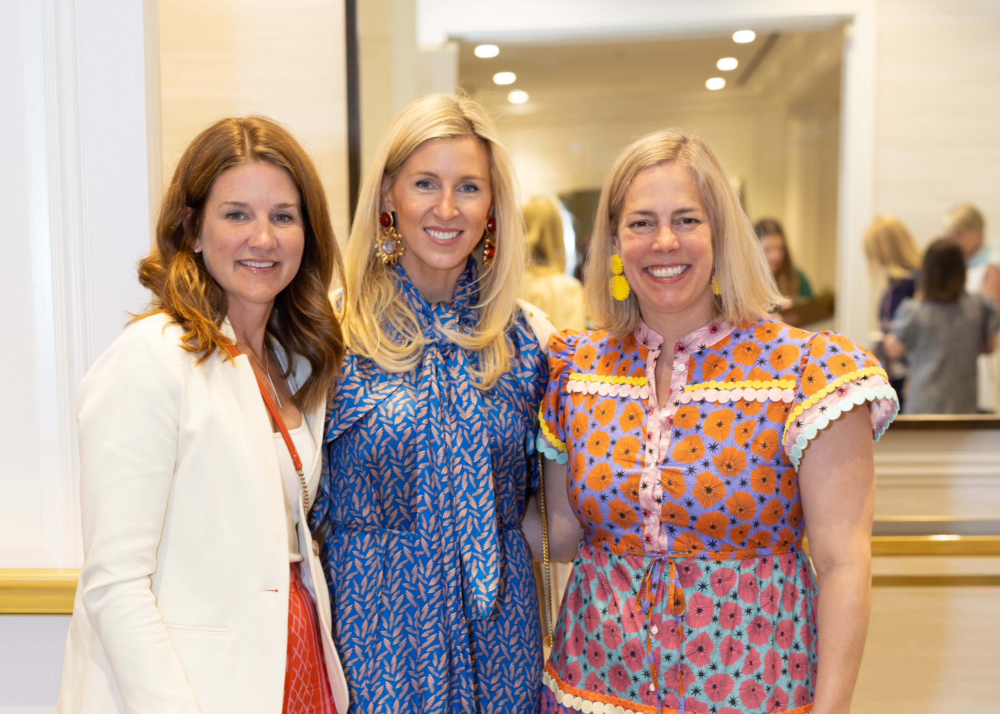
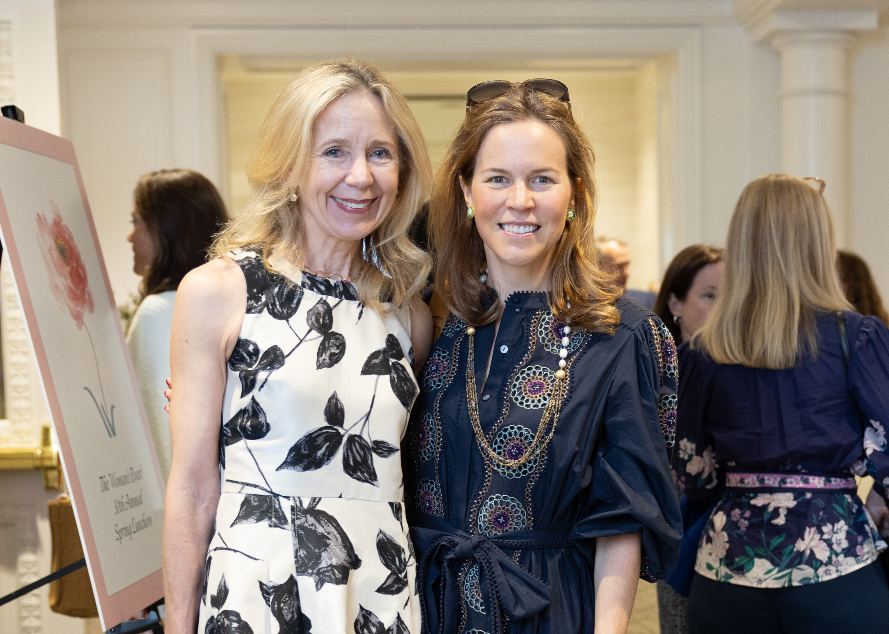
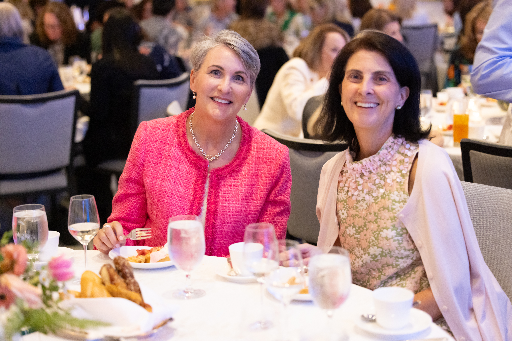
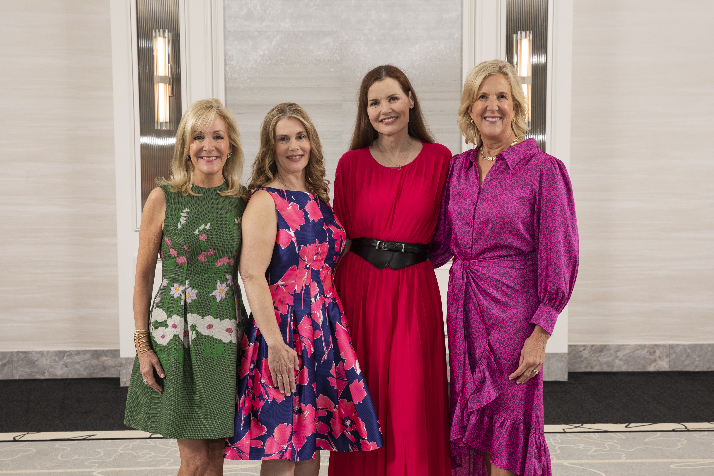

As civic and cultural organizations across the country plan their salutes to America's 250th birthday, the Woman's Board of Rush University Medical Center has chosen once again a most timely and preeminent speaker to address their soon-to-be sold out 31st Annual Spring Luncheon May 11. Pulitzer Prize-winning presidential historian Doris Kearns Goodwin will lead a fireside chat entitled "Leadership for a More Perfect Union: Lessons from America at 250" at the Four Seasons Chicago where 500 guests are expected to attend.

We learned more from Luncheon Chair Cindi Brankin and Kate Peterson, presiding in the final year of her term as Board President.
Peterson told us: "Ms. Kearns Goodwin will reflect on the remarkable journey of the United States—from the ideals of 1776 to the challenges and triumphs each generation has faced along the way—and will explore how leadership, courage, and a shared sense of purpose have helped guide the country through times of division and change."
Together, Brankin and Peterson have curated a program that reflects both the moment and the mission. Moderated by Rush archivist Nathalie Wheaton, the discussion will explore how America's courage and shared sense of purpose have helped guide it through times of division and change.
Brankin told us: "We wanted to celebrate the 250th anniversary of the United States in a way that felt meaningful, but not political. Through her extensive knowledge of American history, Doris Kearns Goodwin will reflect on how, as a country, there is more that unites us than divides us."
For Brankin, who has ancestors who fought in the Civil War, World War II, and family members currently serving in the military, the idea of honoring the nation's history and its shared values feels especially significant. "We want guests to come away from the Spring Luncheon feeling inspired, having learned from one of our country's great historians. Doris is such a prolific storyteller and teacher. It's not just about dates, it's about the personalities she weaves into her stories."

Peterson, who has been a member of the Woman's Board for more than two decades, emphasized the thoughtful balance behind the choice: "Doris is not political, she's historical. Our guests are very intelligent people—they want to learn and come away feeling enriched and uplifted."
The Woman's Board has raised $50 million since its founding in 1884. Proceeds benefit the Woman's Board Endowed Fund for Research and Clinical Trials at Rush—a critical source of support for innovation in patient care, from cancer treatment to mental health programs. The Board, 250 members strong, has committed to contributing $500,000 annually to fund research. There are currently more than 1,600 research studies underway at Rush. "Research is so important, because if we can't fund the research, then we can't find the cure," Peterson noted.
The Woman's Board also supports community outreach initiatives providing medical care and supplies, mental health programs for veterans and families, and educational services for children with autism and emotional disabilities.
Annual Luncheon guests will also look forward to remarks from Dr. Omar Lateef, President and CEO of Rush University System for Health, whose warmth and humor have become a beloved tradition of the day. Those lucky enough to have attended last year's Spring Luncheon will remember how he raved about the pretzel rolls and soon guests were passing them to the podium. "Dr. Lateef loves to go off script…it's always a treat. For so many reasons, we are lucky to have him at the helm," Peterson added.

Brankin added: "As with every Spring Luncheon, the event is as much about connection as it is about cause—a gathering of individuals united by a shared belief in the power of healthcare, research, and community. As the nation approaches its 250th anniversary, the message feels particularly timely: that leadership, compassion, and a sense of common purpose remain the foundation for progress—both in medicine and beyond."

The Spring Luncheon has welcomed an extraordinary roster of voices over the years—from Madeleine Albright and Laura Bush to Brooke Shields, Geena Davis, and Anne Lamott—each offering perspective and inspiration tailored to the times. We love looking at photos from past Rush Spring Luncheons, always with just the right speaker for that day.

